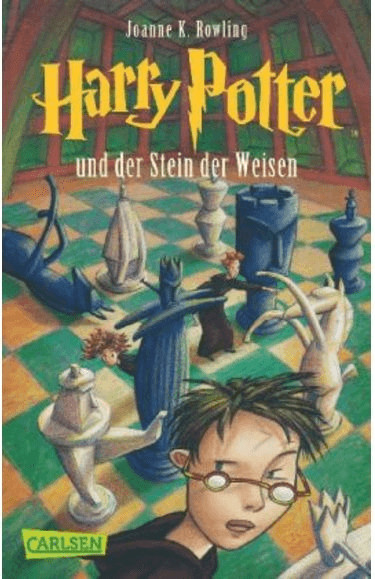
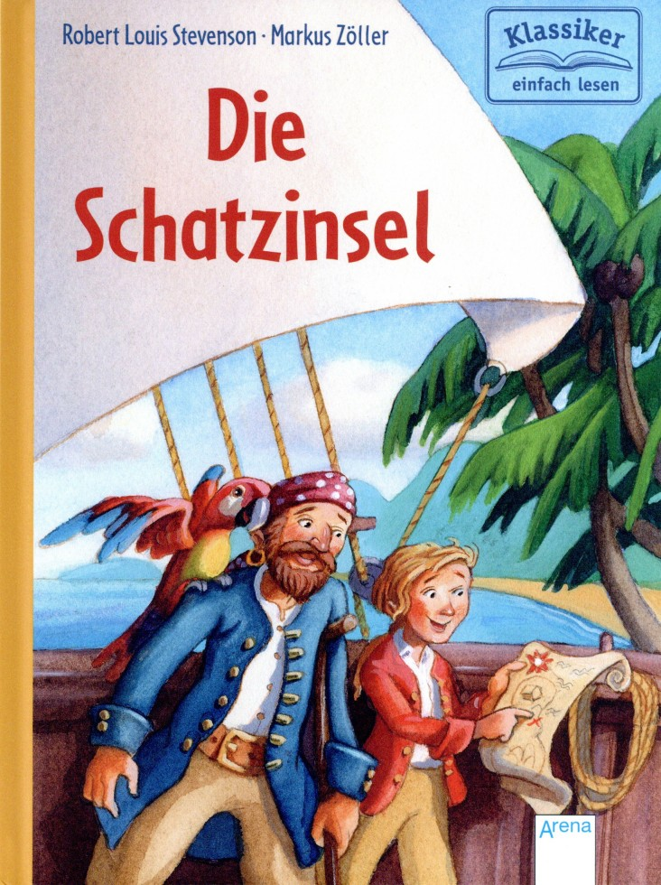

Der Herr der Ringe
„Nicht alle, die wandern, sind verloren.“

„Nicht alle, die wandern, sind verloren.“
„Es sind unsere Entscheidungen, Harry, die zeigen, wer wir wirklich sind, weit mehr als unsere Fähigkeiten.“
„Kein Schatz auf Erden und kein Glück kann mit einem Freund verglichen werden, der uns in schweren Zeiten beisteht.“